손주형, 네이버 웹툰 ML 엔지니어
관심사 ml, cloud, tensorflow, onnx
github linkedIn
MLOps is a practice for collaboration and communication between data scientists and operations professionals to help manage production ML lifecycle.
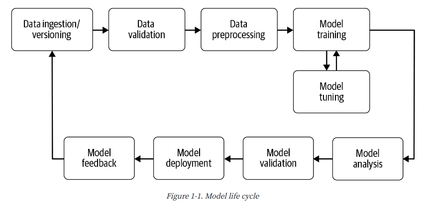
ml + devops
$ ssh ~~~~ $ mv /data/root/dataset ./
$ python preprocessing.py Processing: 100%|██████████████████████| 352M/352M [80:14<00:00, 30.2it/s]
$ nvidia-smi
$ CUDA_VISIBLE_DEVICES=0,1 python train.py --data_path ./data --epoch 100 --save_path ./saved_model training... epoch 1: 100%|██████████████████████| 1000/1000 [00:14<00:00, 30it/s] epoch 2: 42%|█████████▎ | 428/1000 [00:14<00:19, 28it/s]
$ python test.py --data_path ./test_data --model_path ./saved_model testing... model 14: accuracy 90%
$ mv saved_model/14 serving_model/
pipeline run
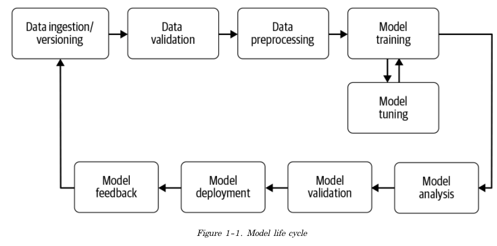
프로젝트에 따라 필요한 컴포넌트만 사용
비슷한 오픈소스
AeroSolve (airbnb) Railyard (Stripe) Luigi (spotify) Michelangelo (Uber) Metaflow (Netflix)
ml 컴포넌트를 실행, 모니터링
데이터 준비하고 파이프라인에 주입
아웃풋 ExampleGen - 데이터셋 수집, 분할하는 파이프라인 초기 입력 컴포넌트
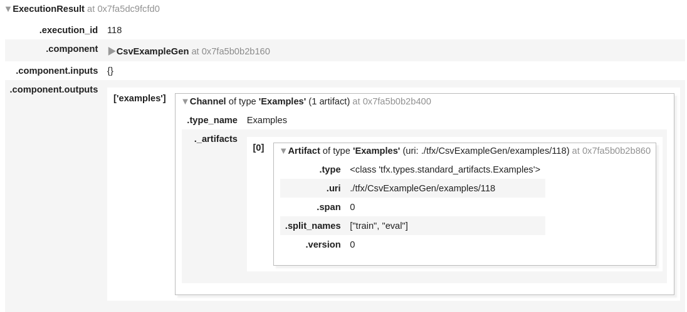
데이터가 현재 모델에 적합한 데이터인지 검증
garbage in, garbage out 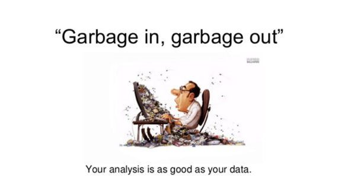
TFDV -> 정형 데이터에 특화된 데이터 검증 라이브러리
텍스트, 이미지 데이터의 경우엔?? => 눈으로 본다... 아직 빈약 (딱히 방법도 없음)
Examples -> ExampleStatistics -> Schema -> ExampleValidator 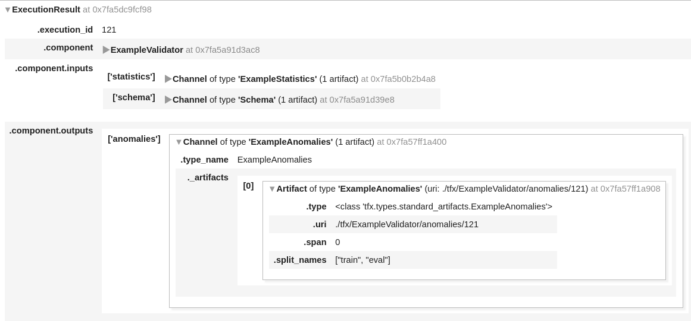
Examples
ExampleStatistics
Schema
ExampleValidator
검증된 데이터를 모델이 사용할 수 있는 형태로 처리
Training-Serving Skew
해결 방법 1
해결 방법 2
해결 방법 3
torch.nn
tft
TFT
model.ftf_layer = tf_transform_output.transform_features_layer() # 전처리 transformed_features = model.ftf_layer(input) # 인퍼런스 outputs = model(transformed_features)
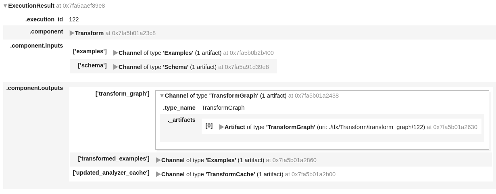
학습 후 결과물을 저장
run_fn() 함수를 구현 해놓으면 컴포넌트가 가져다 사용
run_fn()
run_fn():
하는 함수
def run_fn(fn_args): tf_transform_output = tft.TFTransformOutput(fn_args.transform_output) train_dataset = _input_fn(fn_args.train_files, tf_transform_output, batch_size) eval_dataset = _input_fn(fn_args.eval_files, tf_transform_output, batch_size) model = get_model() model.fit( ... ) model.save( fn_args.serving_model_dir, save_format="tf", signatures=signatures )
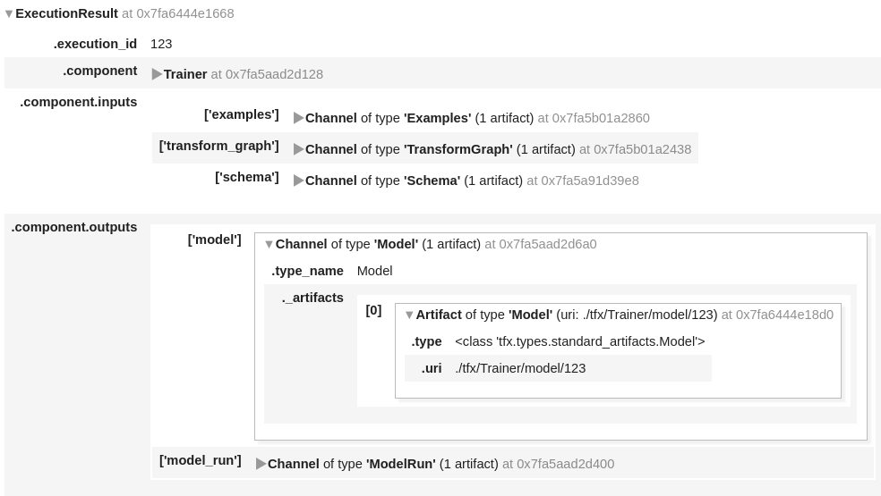
학습된 모델을 분석하고 배포중인 모델과 성능을 비교 후 대체
loss vs metric
학습된 모델을 분석하고 배포중인 모델의 성능을 비교 후 대체
모델 분석
XAI
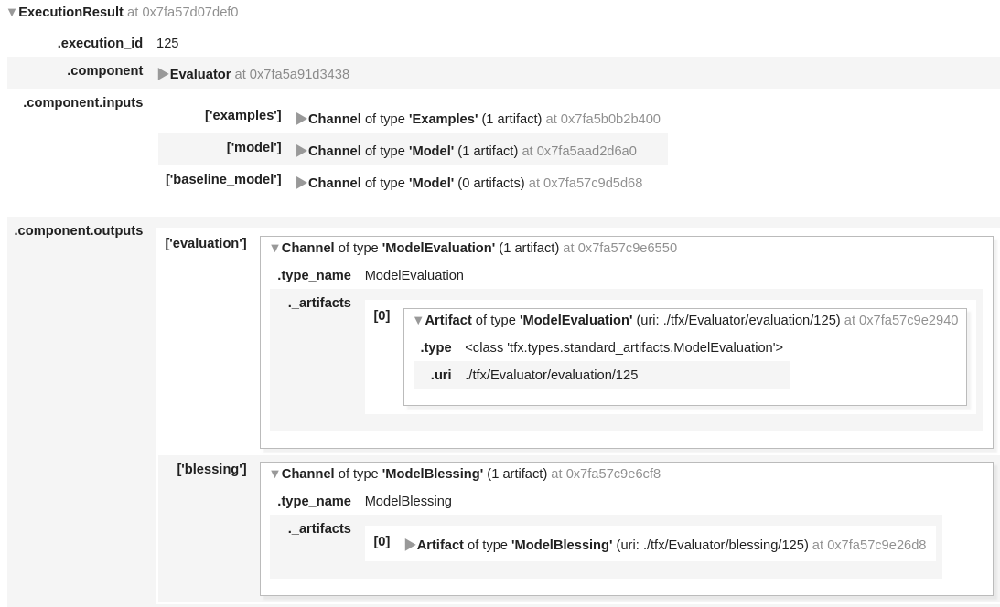
클라이언트에게 모델 아웃풋을 제공
딥러닝 모델 서빙
파이썬 웹 서버(flask, fastAPI, django) 기반
오픈소스 서빙 서버(triton, tf serving, kf serving)
KFserving 명세
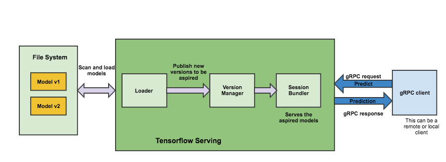
TF Serving
Saved Model
saved_model_path = model.save('saved_models/1', save_format='tf', signatures=signatures)
$ tree saved_models/ saved_models/ └── 1 ├── assets │ └── saved_model.json ├── saved_model.pb └── variables ├── checkpoint ├── variables.data-00000-of-00001 └── variables.index 3 directories, 5 files
Model Signatures
predict
classify
regress
signature_def: { key : "prediction_signature" value: { inputs: { key : "inputs" value: { name: "sentence:0" dtype: DT_STRING tensor_shape: ... }, ... } outputs: { key : "scores" value: { name: "y:0" dtype: ... tensor_shape: ... } } method_name: "tensorflow/serving/predict" } }
signature_def: { key : "classification_signature" value: { inputs: { key : "inputs" value: { name: "sentence:0" dtype: DT_STRING tensor_shape: ... } } outputs: { key : "classes" value: { name: "y_classes:0" dtype: DT_UINT16 tensor_shape: ... } } outputs: { key : "scores" value: { name: "y:0" dtype: DT_FLOAT tensor_shape: ... } } method_name: "tensorflow/serving/classify" } }
signature_def: { key : "regression_signature" value: { inputs: { key : "inputs" value: { name: "input_tensor_0" dtype: ... tensor_shape: ... } } outputs: { key : "outputs" value: { name: "y_outputs_0" dtype: DT_FLOAT tensor_shape: ... } } method_name: "tensorflow/serving/regress" } }
signature 설정
tf.keras.Model
signatures = { 'serving_default': _get_serve_tf_examples_fn( model, tf_transform_output).get_concrete_function( # tf 함수 불러오기 tf.TensorSpec( shape=[None], dtype=tf.string, name='examples') ) } model.save(fn_args.serving_model_dir, save_format='tf', signatures=signatures)
def get_serve_tf_examples_fn(model, tf_transform_output): model.tft_layer = tf_transform_output.transform_features_layer() 1 @tf.function def serve_tf_examples_fn(serialized_tf_examples): feature_spec = tf_transform_output.raw_feature_spec() feature_spec.pop(LABEL_KEY) parsed_features = tf.io.parse_example( serialized_tf_examples, feature_spec) 2 transformed_features = model.tft_layer(parsed_features) 3 outputs = model(transformed_features) 4 return {'outputs': outputs} return serve_tf_examples_fn
cli 로 model inspect $ pip install tensorflow-serving-api
$ pip install tensorflow-serving-api
$ saved_model_cli show --dir saved_models/ \ --tag_set serve --signature_def serving_default The given SavedModel SignatureDef contains the following input(s): inputs['examples'] tensor_info: dtype: DT_STRING shape: (-1) name: serving_default_examples:0 The given SavedModel SignatureDef contains the following output(s): outputs['outputs'] tensor_info: dtype: DT_FLOAT shape: (-1, 1) name: StatefulPartitionedCall_1:0 Method name is: tensorflow/serving/predict
서빙서버 실행 $ pip install tensorflow-serving-api
$ docker pull tensorflow/serving:latest-gpu
$ CUDA_VISIBLE_DEVICES=0,1,2 docker run -p 8500:8500 \ -p 8501:8501 \ --mount type=bind,source=/tmp/models,target=/models/my_model \ -e MODEL_NAME=my_model \ -e MODEL_BASE_PATH=/models/my_model \ -t tensorflow/serving
tf serving
클라이언트에게 모델 아웃풋을 제공 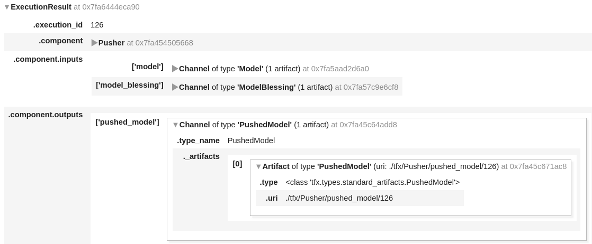
필요한 컴포넌트를 직접 만들자
tfx가 모든 기능을 제공하지는 않음 (아직 버전 0.23..)
비정형 데이터를 다루는데에는 아직 부족
ex
이미지 로드 -> TFRecord 데이터 주입 컴포넌트 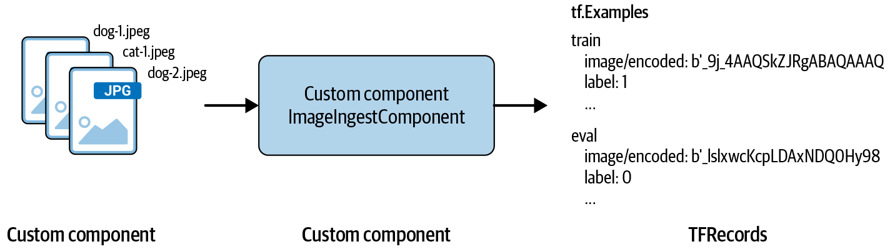
기본 컴포넌트 구현
from scratch
component spec
from tfx.types.component_spec import ChannelParameter from tfx.types.component_spec import ExecutionParameter from tfx.types import standard_artifacts class ImageIngestComponentSpec(types.ComponenetSpec): PARAMETERS = { 'name': ExecutionParameter(type=Text) } INPUTS = { # 'input'으로 input path 를 넣는다. 'input': ChannelParameter(type=standard_artifacts.ExternalArtifact) } OUTPUTS = { # 'examples'에 tfrecords를 저장한다. 'examples': ChannelParameter(type=standard_artifacts.Examples) }
component excutor
from tfx.components.base import base_executor class Executor(base_executor.BaseExecutor): def Do(self, input_dict: Dicr[Text, List[types.Artifact]], output_dict: Dict[Text, List[types.Artifact]], exec_properties: Dict[Text, Any]) -> None: self._log_startup(input_dict, output_dict, exec_properties) input_base_url = artifact_utils.get_single_url(input_dict['input']) image_files = tf.io.gfile.listdir(input_base_url) splits = get_splits(image_files) for split_name, images in splits: output_dir = artifact_utils.get_split_url( output_dict['examples'], split_name ) tfrecord_filename = os.path.join(output_dir, 'images.tfrecord') options = tf.io.TFRecordOptions(compression_type=None) writer = tf.io.TFRecordWriter(tfrecord_filename, options=options) for image in images: convert_image_to_TFExample(image, tf_writer, input_base_url)
component driver
class ImageIngestDriver(base_driver.BaseDriver): def resolve_input_artifacts( self, input_channels: Dict[Text, types.Channel], exec_properties: Dict[Text, Any], driver_args: data_types.DriverArgs, pipeline_info: data_types.PipelineInfo) -> Dict[Text, List[types.Artifact]]: del driver_args del pipeline_info input_dict = channel_utils.unwrap_channel_dict(input_channels) for input_list in input_dict.values(): for single_input in input_list: self._metadata_handler.publish_artifacts([single_input]) absl.logging.debug("Registered input: {}".format(single_input)) absl.logging.debug("single_input.mlmd_artifact " "{}".format(single_input.mlmd_artifact)) return input_dict
component
from tfx.components.base import base_component from tfx import types from tfx.types import channel_utils class ImageIngestComponent(base_component.BaseComponent): SPEC_CLASS = ImageIngestComponentSpec EXECUTOR_SPEC = executor_spec.ExecutorClassSpec(ImageIngestExecutor) DRIVER_CLASS = ImageIngestDriver def __init__(self, input, output_data=None, name=None): if not output_data: examples_artifact = standard_artifacts.Examples() examples_artifact.split_names = artifact_utils.encode_split_names(['train', 'eval']) output_data = channel_utils.as_channel([examples_artifact]) spec = ImageIngestComponentSpec(input=input, examples=output_data, name=name) super(ImageIngestComponent, self).__init__(spec=spec)
component 사용
from tfx.utils.dsl_utils import external_input from image_ingestion_component.component import ImageIngestComponent context = InteractiveContext() image_file_path = "/path/to/files" examples = external_input(dataimage_file_path_root) example_gen = ImageIngestComponent(input=examples, name=u'ImageIngestComponent') context.run(example_gen) statistics_gen = StatisticsGen(examples=example_gen.outputs['examples']) context.run(statistics_gen) context.show(statistics_gen.outputs['statistics'])
inherit
class ImageExampleGenExecutor(BaseExampleGenExecutor): @beam.ptransform_fn def image_to_example(...): ... def GetInputSourceToExamplePTransform(self) -> beam.PTransform: return image_to_example
inherit 사용
from tfx.components import FileBasedExampleGen from tfx.utils.dsl_utils import external_input from image_ingestion_component.executor import ImageExampleGenExecutor input_config = example_gen_pb2.Input(splits=[ example_gen_pb2.Input.Split(name='images', pattern='sub-directory/if/needed/*.jpg'), ]) output = example_gen_pb2.Output( split_config=example_gen_pb2.SplitConfig(splits=[ example_gen_pb2.SplitConfig.Split( name='train', hash_buckets=4), example_gen_pb2.SplitConfig.Split( name='eval', hash_buckets=1) ]) ) example_gen = FileBasedExampleGen( input=external_input("/path/to/images/"), input_config=input_config, output_config=output, custom_executor_spec=executor_spec.ExecutorClassSpec( ImageExampleGenExecutor) )
kubeflow
kubeflow pipelines
k8s, argo... 아직 잘 모르겠다면,
tfx 스크립트만..!
INFO:absl:Pipeline root set to: /tfx-data/output INFO:absl:Adding upstream dependencies for component CsvExampleGen INFO:absl:Adding upstream dependencies for component ResolverNode_latest_blessed_model_resolver INFO:absl:Adding upstream dependencies for component StatisticsGen INFO:absl: -> Component: CsvExampleGen INFO:absl:Adding upstream dependencies for component SchemaGen INFO:absl: -> Component: StatisticsGen INFO:absl:Adding upstream dependencies for component ExampleValidator INFO:absl: -> Component: SchemaGen INFO:absl: -> Component: StatisticsGen INFO:absl:Adding upstream dependencies for component Transform INFO:absl: -> Component: CsvExampleGen INFO:absl: -> Component: SchemaGen INFO:absl:Adding upstream dependencies for component Trainer INFO:absl: -> Component: SchemaGen INFO:absl: -> Component: Transform INFO:absl:Adding upstream dependencies for component Evaluator INFO:absl: -> Component: CsvExampleGen INFO:absl: -> Component: ResolverNode_latest_blessed_model_resolver INFO:absl: -> Component: Trainer INFO:absl:Adding upstream dependencies for component Pusher INFO:absl: -> Component: Evaluator INFO:absl: -> Component: Trainer
argo_conf.yaml